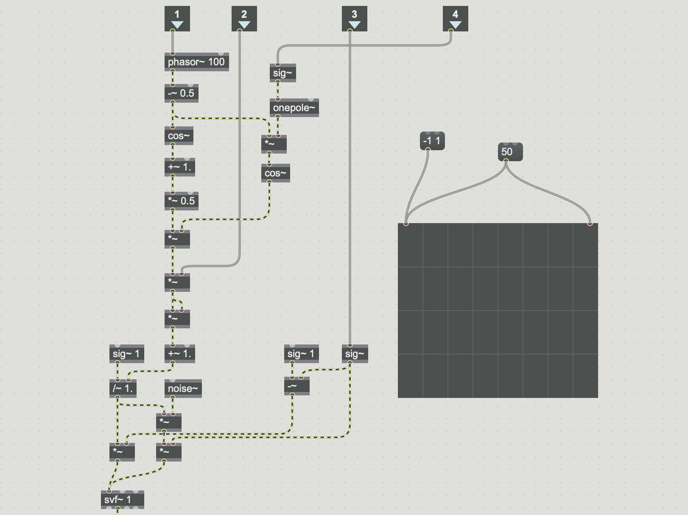
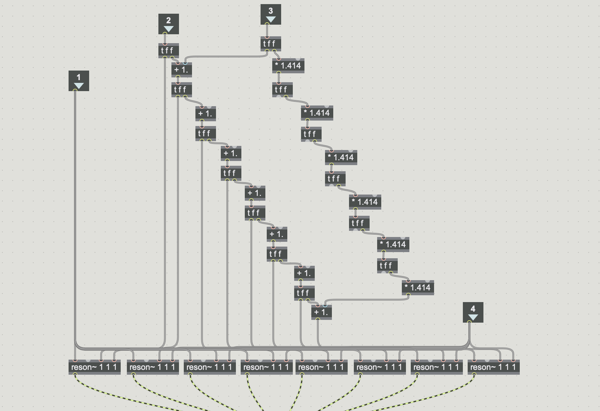
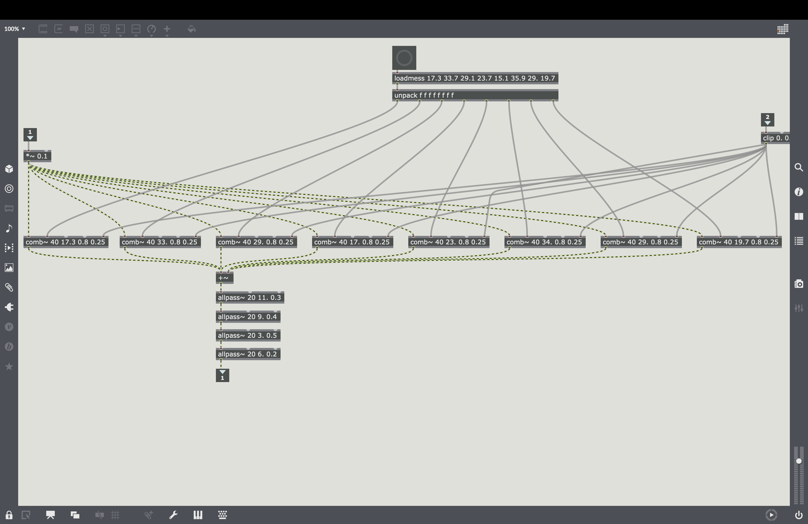

物理モデル音源を使って何か新しいものを作るという課題が授業で出されたので色々と調べていたところ、動物の鳴き声に関するリアルタイム演算の研究を見つけました。そこで、異なる動物の発声器官を組み合わせて存在しない動物の音をコンピューター上で再現できるんじゃないかと考え、３人グループでそれに関するオーディオプラグインを作ることにしました。
プロジェクトはこちら。ソースコード(Max パッチ・Projucer)のzipっとオーディオプラグインのzipをダウンロードできます。
声帯モデル
声道フィルター
環境リバーブ
